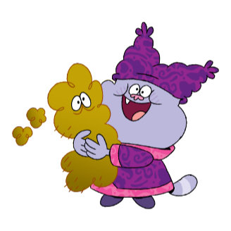

Info About The Show
"Chowder" is an animated television series that aired on Cartoon Network from 2007 to 2010. Created by C.H. Greenblatt, the show follows the adventures of a young apprentice chef named Chowder in the fantastical city of Marzipan. Set in a whimsical world where food can come to life, Chowder works alongside his mentor Mung Daal, a master chef, and his wife Truffles in the Mung Daal Catering company. The series combines surreal humor, creative animation, and culinary-themed escapades as Chowder navigates the challenges of the culinary world, often leading to humorous and chaotic situations. The show is known for its unique visual style, quirky characters, and imaginative storytelling.